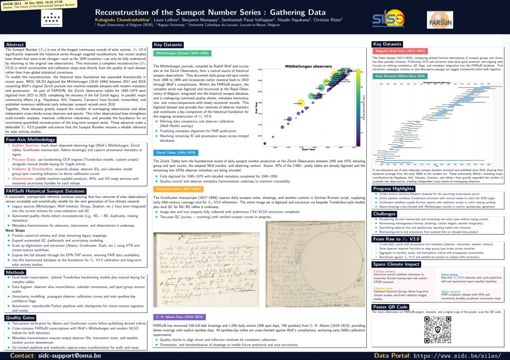
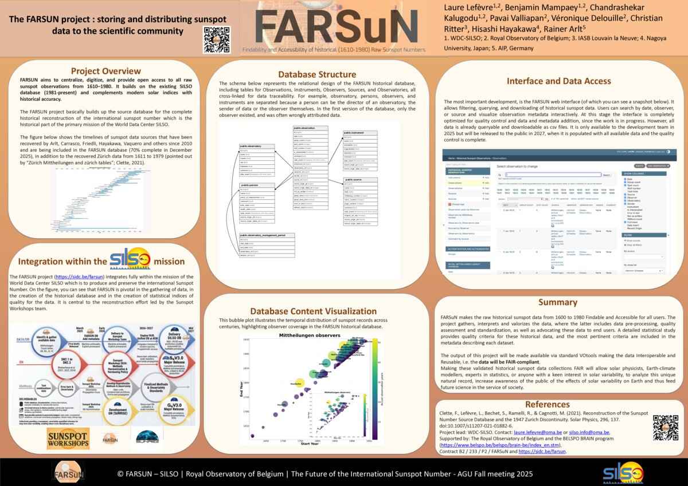
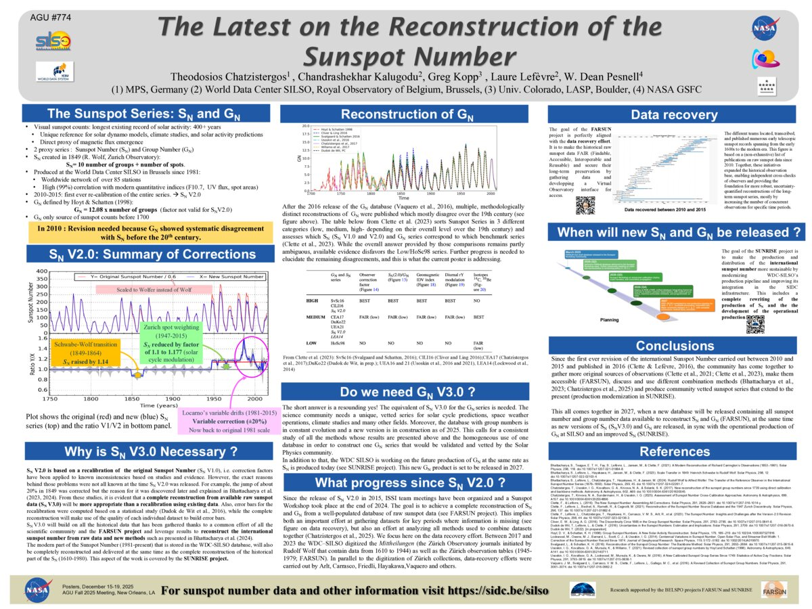

Rebuilding Our View of the Sun
The historical sunspot record is our longest window into solar activity, but it's flawed. The FARSuN project is undertaking a fundamental reconstruction, going back to the original raw data to build a new, more accurate foundation for space climate science.
The Problem with the Past
The Sunspot Number (SN, formerly known as the International Sunspot Number) suffers from historical inconsistencies, like the "Waldmeier jump" around 1947. Previous attempts to fix this were limited to recalibration. FARSuN's approach, a full reconstruction, is fundamentally different and more robust.
A New Paradigm for Data Recovery
The Four-Axis Methodology
FARSuN replays the entire observing chain from archive to release. Each axis keeps the reconstruction transparent and traceable.
Commitment to FAIR Principles
The project ensures long-term data value by adhering to the FAIR principles, making the final dataset robust and accessible for future science.
Project Progress (As of Early 2025)
Zürich Tables (1945–1979)
Fully digitized daily tables with metadata finished for 1945–1959. Observer harmonisation and QC dashboards are underway before the series is exposed through VO/EPN-TAP.
Status of Key Historical Datasets
Each corpus below mirrors the poster: present status, current focus, and immediate next steps.
Legacy sources integrated; automated checks flag NG>NS mismatches and missing metadata while harmonisation of observers and instruments continues.
Observer scaling (k-factors) and confirmation of late 1970s holdings continue alongside cross-comparisons with Mittheilungen.
338 full-disk drawings (308 spot days, 748 spotless) undergo direct vs. reflection calibration, orientation, and dewarping for positional extraction.
Two-pass QC (survey then counting) and Transkribus + citizen-science workflows prepare Kurrent handwriting for daily NG/NS tables.
Printed German descriptions are being OCR’d and aligned so weather notes can tie cleanly to group counts.
A New Standard for Space Climate Research
The ultimate goal of FARSuN is the scientific valorization of its output, culminating in a new, consolidated Sunspot Number (SN V3). This will provide a more accurate and reliable standard for the entire space climate community.
Citizen Science
A forthcoming web platform will engage the public to help transcribe challenging historical texts, accelerating data processing.
Improved Predictions
The new SN V3 will provide a more accurate basis for solar cycle predictions and Earth Radiation Budget studies.
Deeper Understanding
The validated record will enhance climate models and advance our fundamental understanding of the Sun-Earth connection.
Data sources & deep dives
Explore the standalone HTML reports produced during the FARSuN workflow — observer timelines, combined datasets, and focused analyses. Each opens in a new tab for smooth presenting.
ESWW25 Poster Gallery
Browse the complementary posters outlining the Sunspot Number roadmap and the FARSuN reconstruction workflow.
FARSuN Reconstruction Poster
Deep dive into the FARSuN pipeline powering the SN V3 reconstruction.

Sunspot Number Next-Gen Poster
Broader SN GN strategy and community roadmap presented at ESWW25.

AGU25 Poster Gallery
Latest FARSuN updates prepared for the AGU 2025 Annual Meeting, highlighting data extraction, reconstruction, and long-term roadmap work.
Data Extraction & Provenance
Workflow overview for rebuilding the SN record from original documents.

FARSuN Reconstruction Highlights
Top-level poster outlining progress and milestones for SN V3.

SN Reconstruction Roadmap
Detailed SN reconstruction pathway presented for AGU engagement.

Zürich Tables
OpenComplete daily counts for 1945–1979 digitised with metadata finished for 1945–1959; current work focuses on observer scaling, QC dashboards, and VO/EPN‑TAP publication.
Mittheilungen Dataset
OpenWolf’s harmonised journals (1610–1918) anchor the early record; automated checks watch NG > NS, duplicates, and metadata gaps while observer vocabularies are reconciled.
C. H. Adams Drawings
Open338 full-disk drawings (1 056 entries) now calibrated for direct vs. reflection methods; orientation and positional extraction feed spotless-day baselines.
Database & Pipelines
OpenInteractive overview of the harmonised FARSuN database, processing pipelines, and release roadmap underpinning the SN V3 build.
Gruithuisen Data
OpenImages and snippets (1817–1849) collected; two-pass QC with Transkribus plus citizen-science workflows prepare daily NG/NS tables from Kurrent manuscripts.
Augustin Stark Ledgers
OpenPrinted descriptions (1813–1835) are being OCR’d and normalised so weather notes align with group counts inside the FARSuN schema.